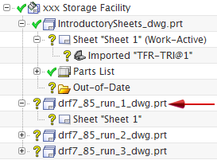
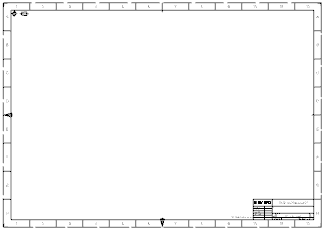
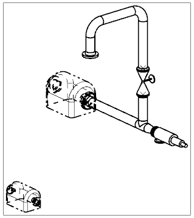

Expand the drf7_85_run_1_dwg.prt node.

Under the drf7_85_run_1_dwg.prt node, double-click the Sheet “Sheet 1” node to open its drawing sheet.

Sheet “Sheet 1” Work
Because you originally specified a blank sheet template for the continuation sheets, this sheet contains no drafting views or parts lists.
Choose Preferences→Drafting Automation.
On the General tab, in the Secondary Content group, under Visible Lines, from the font list, select Phantom.
Under Hidden Lines, from the font list, select Dashed.
Click OK.
In the Part Navigator, right-click the Sheet “Sheet” 1 (Work-Active) node, and then choose Add Base View.
In the Model View group, from the Model View to Use list, select Trimetric.
In the Scale group, from the Scale list, select Ratio.
Type the following values:
and then press Enter.
Place the view at the center of the drawing sheet.

The drawing’s secondary content is rendered according to the drafting automation preferences you selected.
Click Close.